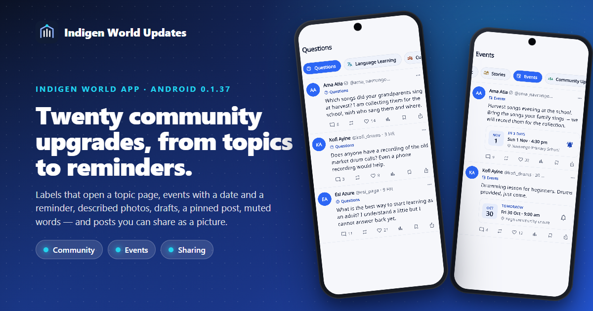
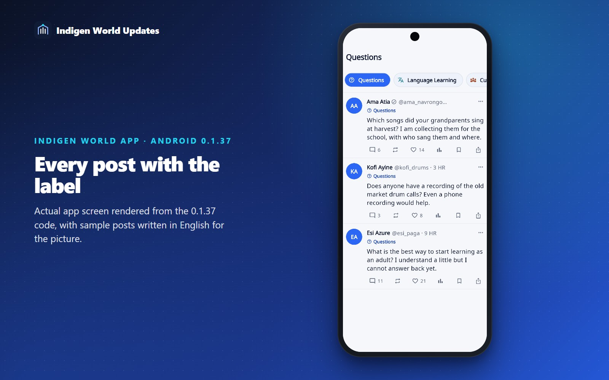
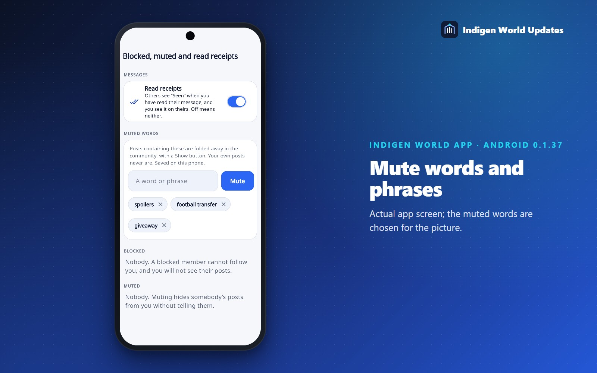
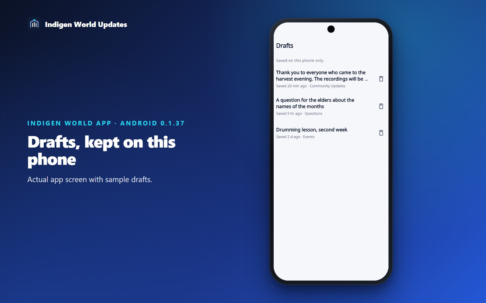
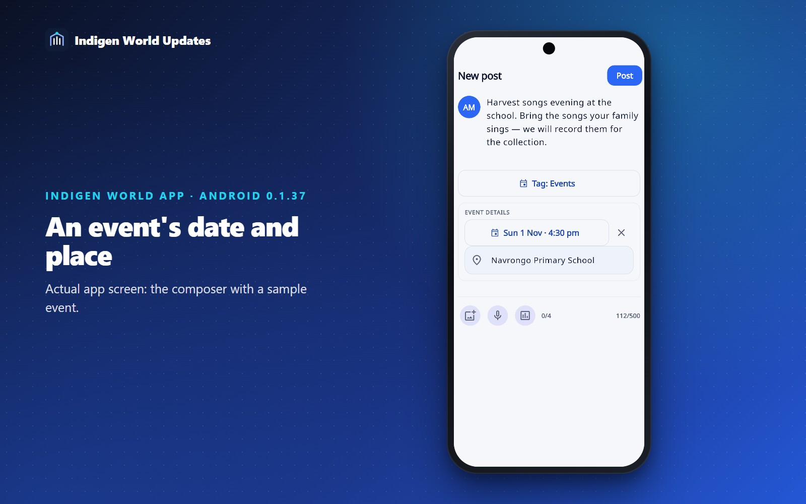
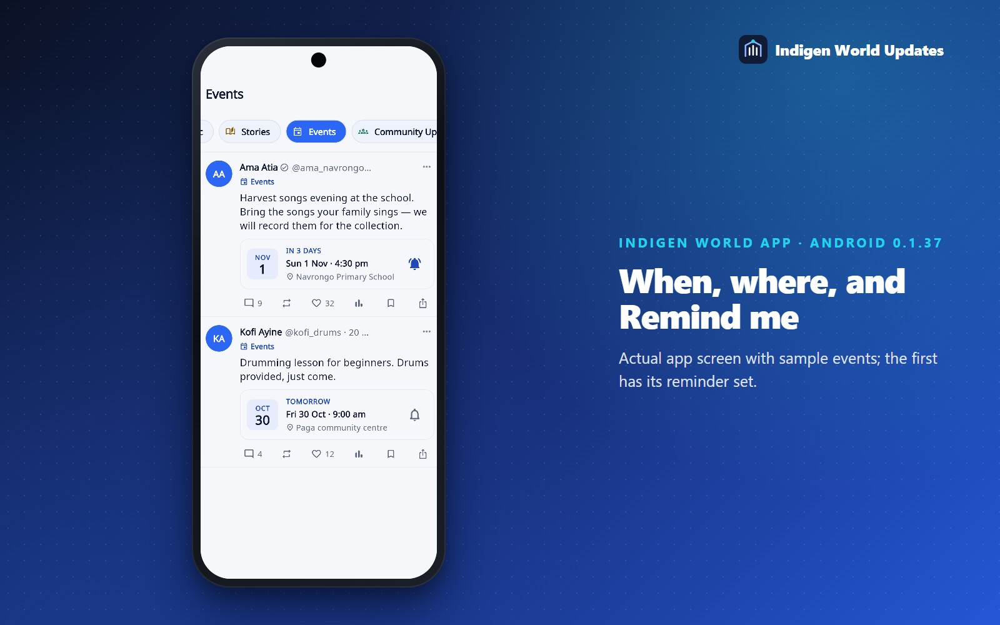
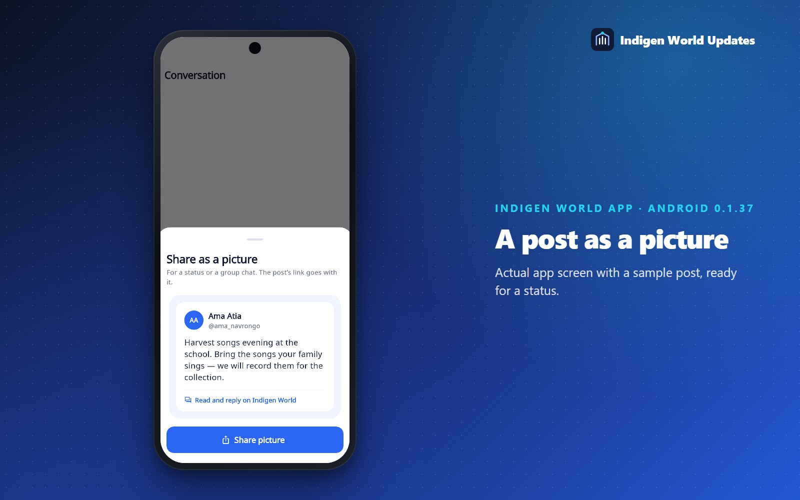
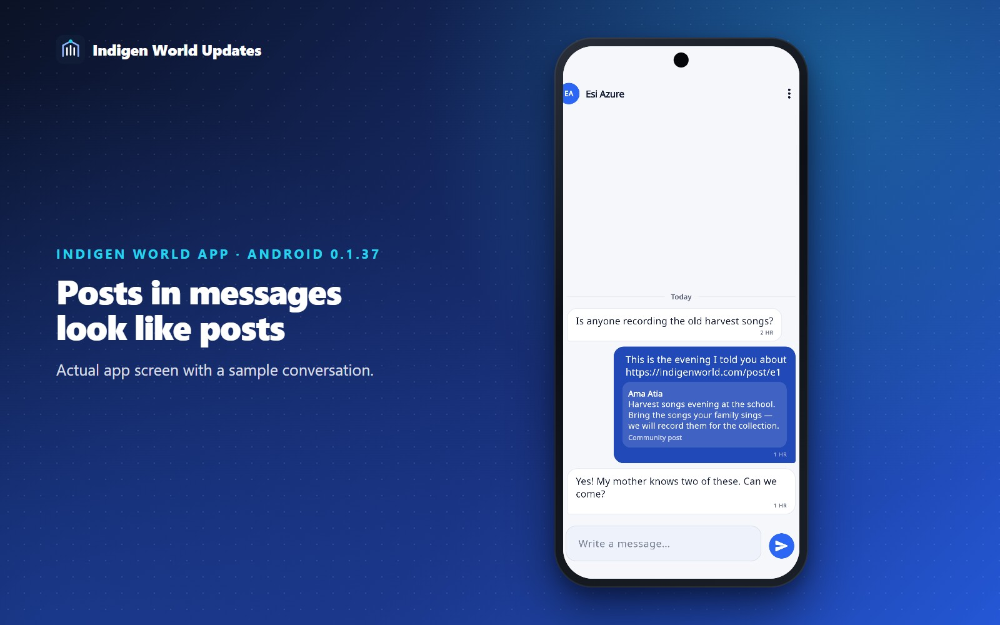
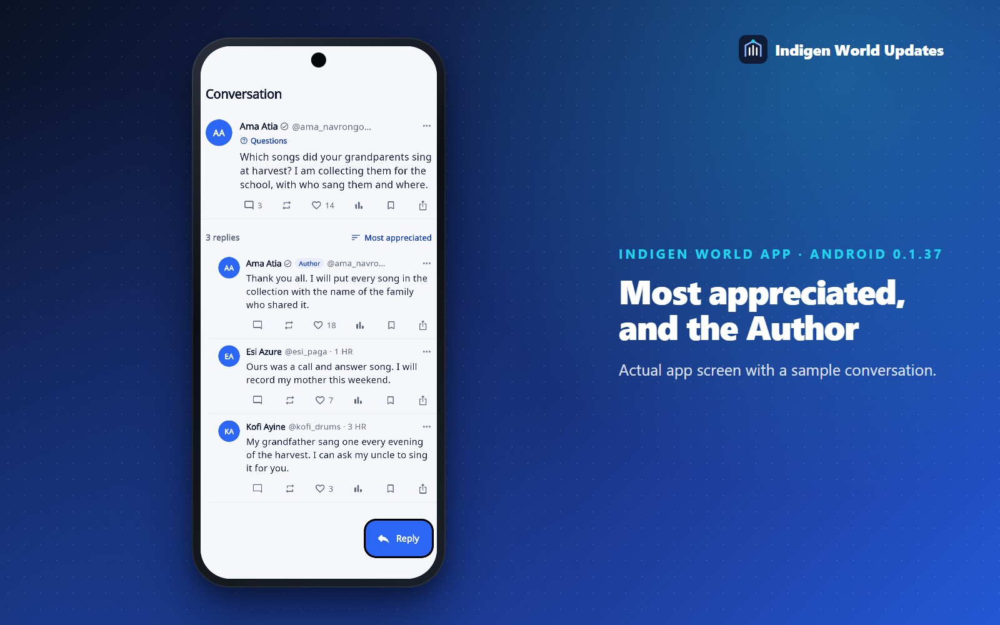
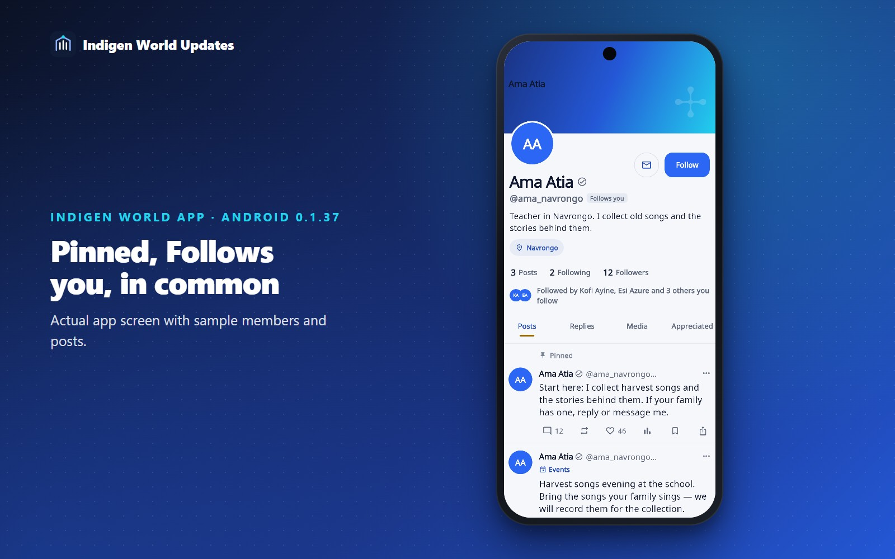

Twenty improvements to the Community tab of the Indigen World app: labels that lead somewhere, events with a date and a reminder, photos that can be described for people who cannot see them, drafts, a pinned post, muted words, and new ways to pass a post on — as a picture for a status, or straight into a conversation.
Status — 29 October 2026. Built and tested as Android version 0.1.37 (build 46). It is not in the Play Store yet; until it is, the app you have works as before. Everything in this update runs on your phone and with the servers as they are today. The website does not show the new event details or image descriptions yet.
The small coloured label under a name — Questions, Language, Culture, Music, Stories, Events, Community Updates, Announcements — now opens a page of every recent post carrying it. The other labels sit along the top, one tap apart.

Tap For you or Following while you are already on it and the feed flies back to the top, bringing in anything new on the way — the same as tapping Community in the bottom bar.
A thin line in the feed says Seen on your last visit. Everything above it arrived since you were last here; everything below it was already there. It stays on your phone and moves on by itself.
In Settings → Blocked, muted and read receipts you can mute words and phrases. A post containing one is folded away to a single line with a Show button, in the feed, in communities, on profiles and in conversations. Capital letters and tone marks are ignored, a single word only matches as a whole word, and your own posts are never folded. The list stays on your phone.

Every photo you attach has a small + ALT button. Write what is in the picture — who is there, what they are doing, any words in it — and people who use a screen reader hear your words instead of “image”. Described photos show an ALT mark in the feed; tap it to read the description.
Leave a half-written post and the app asks whether to Save draft. Drafts wait under Drafts in the community menu, with their label, community and photos, until you post them or delete them. Drafts are kept on this phone only.

Label a post Events and the composer asks when and, if you like, where. The post then shows a date tile and says how far off it is — Today, Tomorrow, In 3 days — and Ended once it is over.

Tap the bell on an event and your phone reminds you an hour before it starts. Tap the reminder and the post opens. Nobody else is told you set it.

The first time you post into a community that has rules, they are shown to you before your post goes, with I’ll follow these. After that you are not asked again for that community.
⋯ → Share as a picture turns a post into a clean card — who wrote it, what they wrote and its first photo — ready for a WhatsApp status or a group chat. The link to the post goes with it.

⋯ → Send in a message sends a post to one of your conversations, with a note if you want one.
A post link in a conversation now shows as the post itself — who wrote it, the start of it and its first photo. Tap it to open the conversation around it.

⋯ → Ask Kawuri about this post opens Kawuri with a question about the post already written — explain any Kasem in it, word by word. Nothing is sent until you press send, so you can change the question first.
Long conversations can be read Oldest first, Newest first or Most appreciated first.
Replies from the person who started the conversation carry an Author badge, so their answers are easy to find.

⋯ → Pin to your profile keeps one of your posts at the top of your profile, marked Pinned, for anyone who visits. Pin another and it takes its place; unpin it from the same menu.
Profiles and people lists say Follows you beside the handle of anybody who does.
A profile now says who you know there: Followed by Kofi, Esi and 3 others you follow.

On Communities → Joined, a small dot beside a name means something has been posted there since you last looked in.
A community’s Members tab has a search box once it has a few members, and Saved posts can be searched by what was written or who wrote it, and filtered by label.